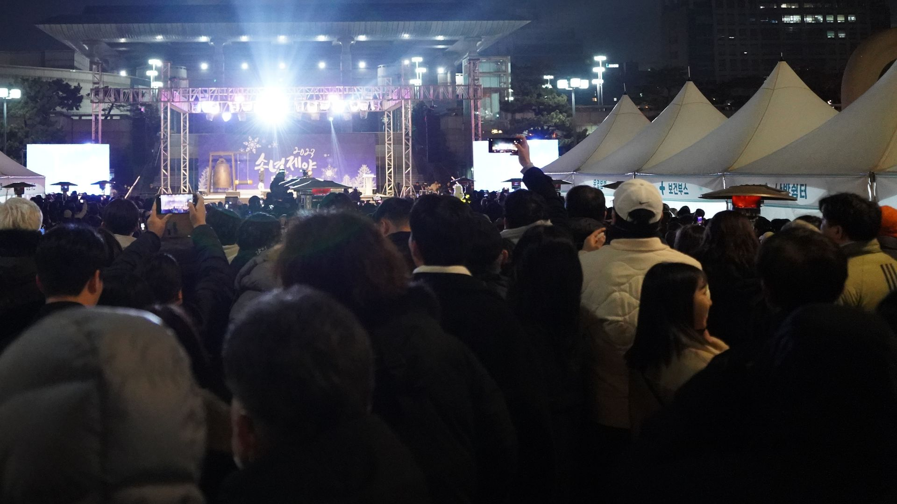
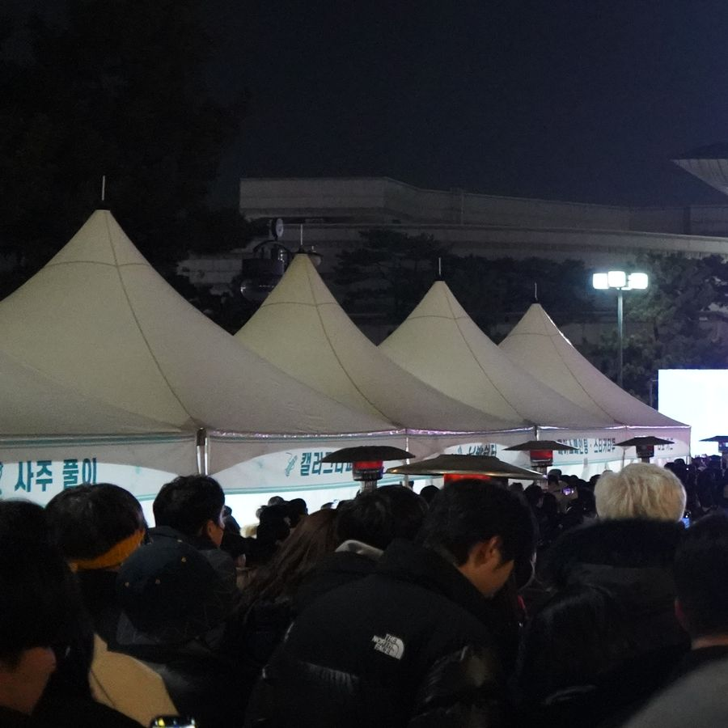
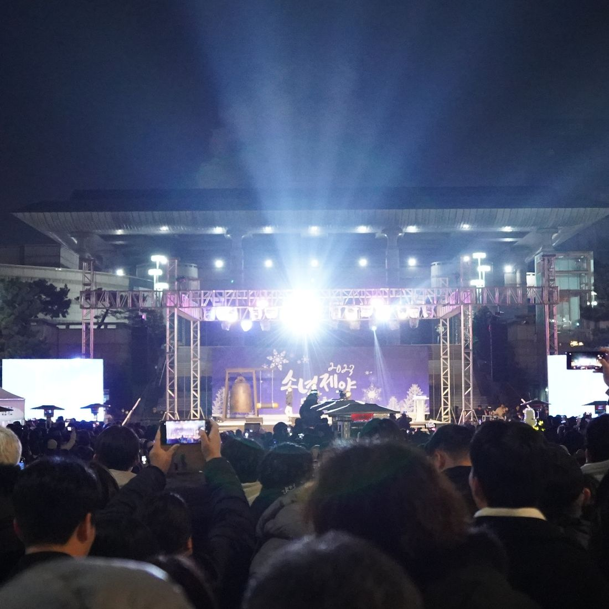

인천 공연문화 플랫폼
인천 공연문화의 중심,
기획부터 제작까지 함께합니다
엔티켓 티켓예매 플랫폼을 기반으로 공연기획·행사대행·디자인·영상제작까지, 인천 지역 공연·행사에 필요한 모든 것을 한 팀이 지원합니다.
OUR WORK
2003년 설립 이후 인천 지역 공연·행사 시장과 함께 성장해 왔습니다. 티켓예매 플랫폼 엔티켓을 운영하며 지역 공연 문화의 기반을 다지고, 디자인 브랜드 엔디자인과 영상 브랜드 엔미디어를 통해 공연 홍보·제작 전반의 솔루션을 제공합니다. 기획사·주최자가 공연 하나에 필요한 모든 것을 한 팀에게 맡길 수 있도록 지원합니다.
- 210,154명누적 회원
- 138,193뷰매월 페이지뷰
- 37,904명매월 방문자
- 22년서비스 운영

VISION
인천의 무대가 열리는 곳마다
엔티켓이 함께합니다

MISSION
기획부터 예매, 현장 운영까지
한 팀이 끝까지 책임집니다
WHAT WE DO 01 / 03
-
TICKETING
인천 지역 공연에 특화된 티켓예매 플랫폼
콘서트, 연극, 뮤지컬, 전시, 행사까지 인천 전 지역 공연장을 아우르는 예매 플랫폼입니다. 인터넷·모바일 예매부터 현장 발권까지 공연 기획사가 필요한 예매 인프라 전반을 지원합니다.
- 온라인·모바일 예매 시스템
- 현장 발권 및 취소·환불 처리
- 기획사 전용 공연 등록·관리
- 회원 기반 마케팅 지원
-
EVENT
수백 회 현장 경험으로 완성하는 행사 운영
공연과 축제를 통해 쌓아온 실전 운영 노하우로 현장을 완성합니다. 규모와 성격에 맞는 맞춤형 컨트롤로 관객 동선, 무대 리듬, 행사 전체 흐름을 섬세하게 조율합니다.
- 행사 기획 및 운영 총괄
- 현장 인력 구성·배치
- 무대·음향·조명 협력사 연계
-
PRODUCTION
콘서트·연극·뮤지컬 전 장르 공연기획
공연의 시작과 끝을 가장 잘 아는 팀이 기획합니다. 다채로운 무대를 만들어온 기획력과 예술 현장에서 축적한 운영 노하우로 지역 문화의 무대를 만들어갑니다.
- 공연 기획·캐스팅·제작 지원
- 콘서트·연극·뮤지컬·클래식 전 장르
- 인천문화예술회관 상주 운영 경험
주요 실적
- 2024.09
2024 구월문화로 한마당 축제 총괄
연혁에서 보기 - 2024.03
2024 동인천 아트큐브 총괄 (~12월)
연혁에서 보기 - 2023.12
바리톤 고성현 리사이틀 연출
연혁에서 보기




BRAND
HISTORY
2024
- 09
- 2024 구월문화로 한마당 축제 총괄
- 03
- 2024 동인천 아트큐브 총괄 (~12월)
2023
- 12
- 바리톤 고성현 리사이틀 연출
- 2023 송년제야 문화축제 주관
- 10
- 황금토끼 라틴댄스 연출
- 07
- 청천1동 '문화와 낭만의 밤' 주관
- 06
- 김소현·손준호 클래식콘서트 주관
- 2023 살롱콘서트 홍보
- 04
- 옴니버스 콘서트 '세 가지 꿈' 연출
2022
- 11
- 가족뮤지컬 '무지개물고기' 주최
- 09
- 2022 시민희망대축제 주관
- 01
- 청천극장×프리스트 연출
2021
- 12
- 5.3합창단 정기공연 무대감독
- 11
- 2021 장애인인권영화제 연출
- 09
- 2021 시민문화콘서트 주관
- 06
- 2021 살롱콘서트 연출
- 05
- 신미래·신선희 '더 신나는트롯' 연출
2020
- 11
- 2020 장애인인권영화제 연출
- 08
- 두리+숙행 콘서트 연출
- 06
- 마음더하기응원가 '인천열전' 연출
2019
- 12
- 김수희 콘서트 공동주최
2018
- 12
- 김창완 밴드 콘서트 '뭉클' 주관
- 07
- 캐나다 서크엘루아즈 '서커폴리스' 공동주최
2003
- (주)엔엔터테인먼트 설립
CONTACT
- 상담 및 문의
- 1588-2341월~금 10:00~18:00
- 팩스
- 032-818-5727
- 주소
- 인천광역시 남동구 문화서로4번길 66, 지하1층